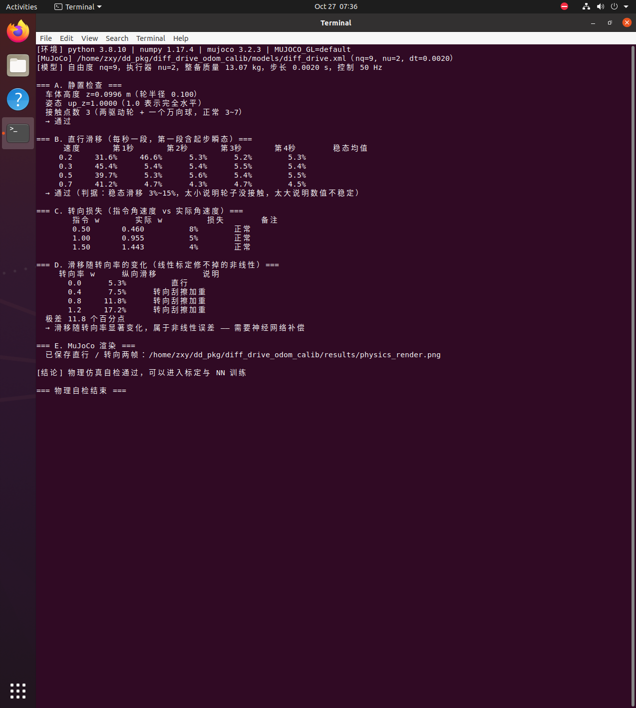
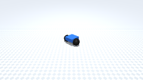

差速机器人里程计标定与神经网络滑移补偿（ROS 1 + MuJoCo）
本页对应 src/ground/diff_drive_odom_calib。在 MuJoCo 里跑一台会打滑的差速车，
先用两个解耦实验辨识线性误差，再用 MLP 学掉"转向越大、滑移越大"的非线性部分。
数据来源
本页所有数字都来自 Ubuntu 20.04 + ROS Noetic + Python 3.8.10 + MuJoCo 3.2.3 的虚拟机实跑，命令见 §3。同一命令重跑会有小幅波动，波动范围见 §6.3 的说明。
1. 本模块实际实现范围
| 作业要求 | 实际情况 |
|---|---|
| (1) 物理仿真 + 键盘控制 | 做了。MuJoCo 场景 nq=9, nu=2（两驱动轮 + 一个万向支撑球），真实摩擦接触；键盘遥控见 scripts/teleop.py |
| (2) 传感器感知 + 运动控制 | 部分做了。只用编码器 + IMU（/wheel_ticks、/imu）做标定与滑移补偿，没有用雷达/摄像头 |
| (3) 导航与 SLAM | 不做。本模块只解决"里程计准不准" |
| (4) 神经网络 | 做了。slip_nn.py 是 4→24→24→2 的 MLP（纯 NumPy 手写反传），输出里程计补偿系数 |
2. 运行环境
| 组件 | 版本（实测） |
|---|---|
| 系统 | Ubuntu 20.04.6 LTS（VMware，无 GPU） |
| ROS | Noetic |
| Python / numpy | 3.8.10 / 1.17.4 |
| MuJoCo | 3.2.3 |
| 其他 | PIL（合成 GIF 用） |
3. 运行步骤
不启 ROS 也能跑的三件事（推荐先跑这些）：
cd src/ground/diff_drive_odom_calib
python3 tools/check_physics.py # ① 物理自检：滑移/接触/姿态
python3 tools/run_experiment.py # ② 标定 + 训练 NN + 三组对比
python3 tools/make_gif.py # ③ 渲染方形路径并合成 GIF
走 ROS 的完整链路：
mkdir -p ~/catkin_ws/src && cd ~/catkin_ws/src
ln -s <仓库路径>/src/ground/diff_drive_odom_calib .
cd ~/catkin_ws && catkin_make && source devel/setup.bash
roslaunch diff_drive_odom_calib main.launch # 仿真 + 直行/旋转标定 + 方形验证
roslaunch diff_drive_odom_calib sim.launch # 只起仿真
rosrun diff_drive_odom_calib teleop.py # 键盘遥控（需真实 TTY）
3.1 运行效果（虚拟机实跑）

3.2 方形路径动图

4. 原理
4.1 里程计积分
| 系数 | 含义 | 辨识实验 |
|---|---|---|
| 平均轮径偏差 + 纵向滑移 | 直行 2 m | |
| 直行航向漂移率 | 直行 2 m | |
| 轮距偏差 + 转向滑移 | 原地转 3 圈 |
三个系数都有闭式解：， ，。
4.2 为什么两个实验能解耦
直行时 ，转角项不起作用； 原地旋转时 ， 项不起作用。所以两组实验各自只影响一个系数。
标定必须丢掉起步瞬态：轮子从静止加速时滑移率高达 31%~45%， 算进去会把 拉低（实测从 0.966 掉到 0.914）。
4.3 为什么还要神经网络
实测纵向滑移随转向率单调上升（见 §6.1），常数系数 只能取一个平均值。 MLP 的输入是左右轮速 + MuJoCo 陀螺仪/加速度计的真实读数， 输出两路的补偿系数。训练是监督学习，不需要 ROS，几秒完成。
5. 代码结构
| 文件 | 作用 |
|---|---|
models/diff_drive.xml |
MuJoCo 场景：两驱动轮 + 一个万向球，真实摩擦接触 |
src/.../mujoco_env.py |
环境封装：位姿由 mj_step 积分，提供轮速/IMU/渲染 |
src/.../model.py |
只做里程计积分（OdometryIntegrator），不含仿真 |
src/.../calibration.py |
三个系数的闭式解（identify） |
src/.../slip_nn.py |
MLP（4→24→24→2）与补偿函数 |
scripts/sim_node.py |
ROS 节点：/odom、/wheel_ticks、/imu、/ground_truth、TF |
scripts/main.py |
标定主节点，只走话题接口 |
scripts/teleop.py |
键盘遥控（termios） |
tools/check_physics.py |
物理自检：滑移是否随速度/转向率变化 |
tools/run_experiment.py |
标定 + 采数据 + 训练 + 三组对比 |
6. 性能评价
6.1 物理特性（tools/check_physics.py）
| 项目 | 实测 |
|---|---|
| 稳态纵向滑移（0.2~0.7 m/s） | 4.5%~5.5% |
| 起步第一秒滑移（瞬态，不参与标定） | 31%~45% |
| 转向损失（ω=0.5 / 1.0 / 1.5） | 8% / 5% / 4% |
| 滑移随转向率 | ω=0 → 5.3%；0.4 → 7.5%；0.8 → 11.8%；1.2 → 17.2% |
最后一行是本模块的核心依据：滑移与转向率强相关，线性系数拟合不了。
6.2 标定结果
，，。
接近 0 是对的：场景里左右轮完全对称，直行本就不该有系统性航向漂移。
6.3 方形路径三组对比（4×4 m，路径长 14.2 m）
| 方案 | 终点位置误差 | 航向误差 |
|---|---|---|
| ① 原始里程计 | 2.914 m | +72.6° |
| ② 参数标定 | 1.937 m | +46.9° |
| ③ 标定 + 神经网络 | 0.979 m | +19.2° |
第③组的两条约束
- 转角一路只允许 ±8% 微调：早期放开到 ±50% 时，神经网络在转向段补偿过头， 航向从 +46.9° 冲到 −30.5°（误差翻倍）。原因是 已吸收主要误差， 残差很小，网络一外推就过冲。收紧后航向单调收敛到 +19.2°。
- 直行段不做转角补偿： 时乘任何系数都会放大数值噪声， 代码里按 门控。
6.4 结论与不足
三组误差单调下降，说明标定和网络都在起作用；但绝对误差仍有 1 m 量级， 主要来自航向： 把转向滑移一起吸收了，一次 90° 转角偏 4% 左右， 四次累积就到 20°~30°。要根治得改用"IMU 角速度直接积分航向 + 互补滤波"， 本模块没有做。
7. 已知限制
- 只标系统误差；打滑等随机误差标不掉，只能靠重复实验统计散布。
- 航向残余约 19°（14.2 m 方形路径），导致终点误差约 0.98 m。
- 未做导航与 SLAM；感知用了编码器 + MuJoCo 的
<gyro>/<accelerometer>真实读数，没有雷达/相机。 - 单元测试：
python3 -m unittest discover -s test（7 项，纯逻辑，不需要 ROS/MuJoCo）。 - 仿真到实车未验证；真值由
/ground_truth提供（相当于现场的卷尺测量）， 换真车时替换成人工输入即可。 - 神经网络对数据采集的随机种子仍有波动（同一配置重跑约 ±0.2 m）。